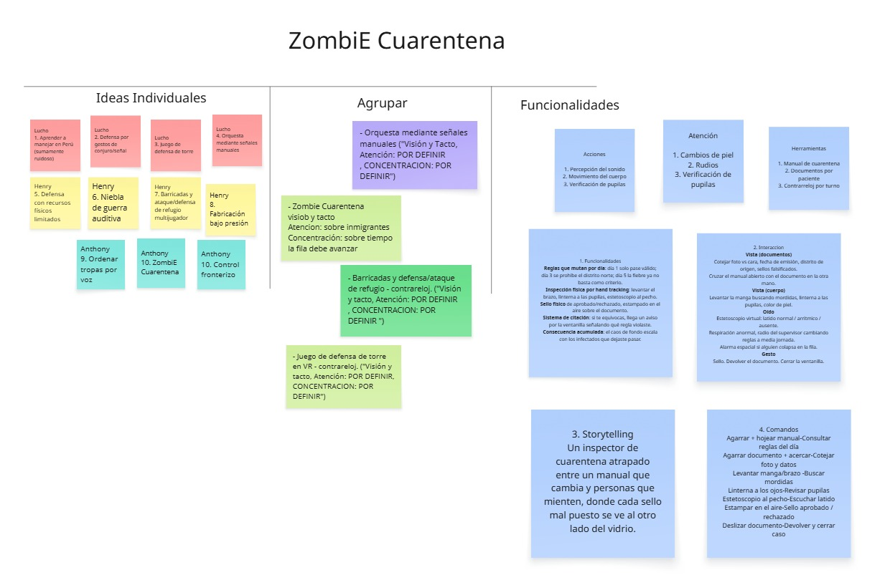

Bienvenidos a Barberos Inc.
"Asustamos" la mala usabilidad y "cortamos" los problemas de experiencia de usuario. Somos un equipo dedicado a crear interfaces accesibles, intuitivas y monstruosamente geniales.
Anthony Aroni Jarata
Henry Aron Yanqui Vera
Luis Alberto Ccalluchi Lopez
Proyecto 1: Videojuego VR
COMPLETADOFase 1: Lluvia de ideas
Ideación y ConceptualizaciónIdea conceptual: Incluir dilemas morales donde el jugador decide quién entra a la zona segura.

Fase 2: Storytelling & Bocetos
Flujo Narrativo VRDiseño en papel de los escenarios y primeros flujos de usuario.
Slide 1: Introducción

Mundo donde personas ven a través de una reja una zona segura que se detalla a través de un cartel.
Slide 2: Paciente 1 (Aprobado)

Llegada del paciente

Revisión de mordida

Signos vitales altos

Sello: Aprobado
El paciente llega asegurando que fue mordido por un perro pero que está sano. En la revisión del brazo obviamente está mordido y tiene el pulso acelerado. Paciente 1 aprobado (el protagonista se cree el cuento).
Slide 3: Paciente 2 (Rechazada)

Llegada y aspecto pálido

Brazo intacto

Signos normales

Ojos rojos anómalos

Sello: Rechazada
Llega con ojos extrañamente rojos diciendo que no pudo dormir y se pone pálida. El cuerpo está sin heridas y el pulso es normal. Paciente 2 rechazada.
Slide 4: Los Finales

Zona segura protegida

Zona segura comprometida
Final 1: Zona segura protegida. Final 2: Zona segura comprometida, gente infectada adentro.
Video Storytelling: Usuario interactuando con bocetos
Testing con Prototipo en PapelRegistro en video donde un usuario interactúa con la secuencia de bocetos de papel para validar el modelo mental y la comprensión del flujo narrativo.
Fase 3: Testing Temprano (Campus)
Pruebas de usabilidad y test de usuarios en el campus con headset Oculus.
"El juego en sí no te indica cómo jugarlo, debes ir tanteando y averiguando cómo funcionan los controles."
Estudiante de Ing. Química
Prueba con headset Oculus
"Me gustó que haya botones y también interacción con los gestos de las manos, normal podía hacerlo funcionar."
Estudiante de Ing. Civil
Prueba con headset Oculus
Fase 4: POV & Gameplay
Versión estable e iterada del proyecto tras aplicar el feedback de los testing.
Fase 5: Evaluación Final
Sustentación del proyecto demostrando el cumplimiento de las heurísticas.
Proyecto 2: App Móvil
PRÓXIMAMENTEEn fase de planeación
Actualmente estamos realizando investigación de usuarios, levantamiento de requerimientos y elaborando nuestros primeros wireframes para este proyecto móvil. Pronto publicaremos nuestras actualizaciones.